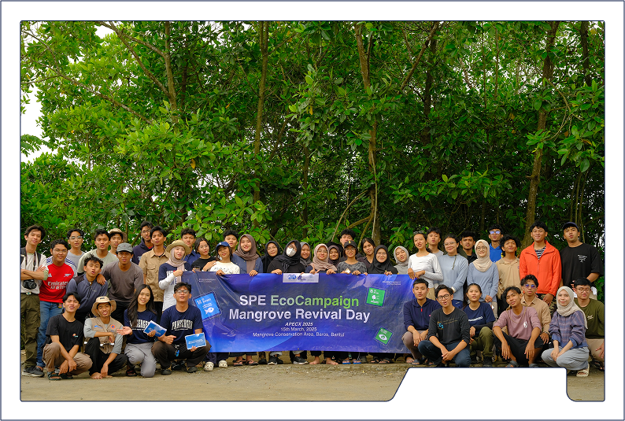
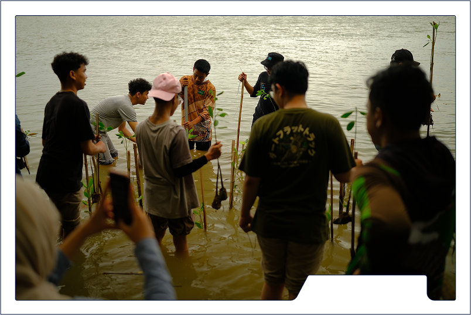
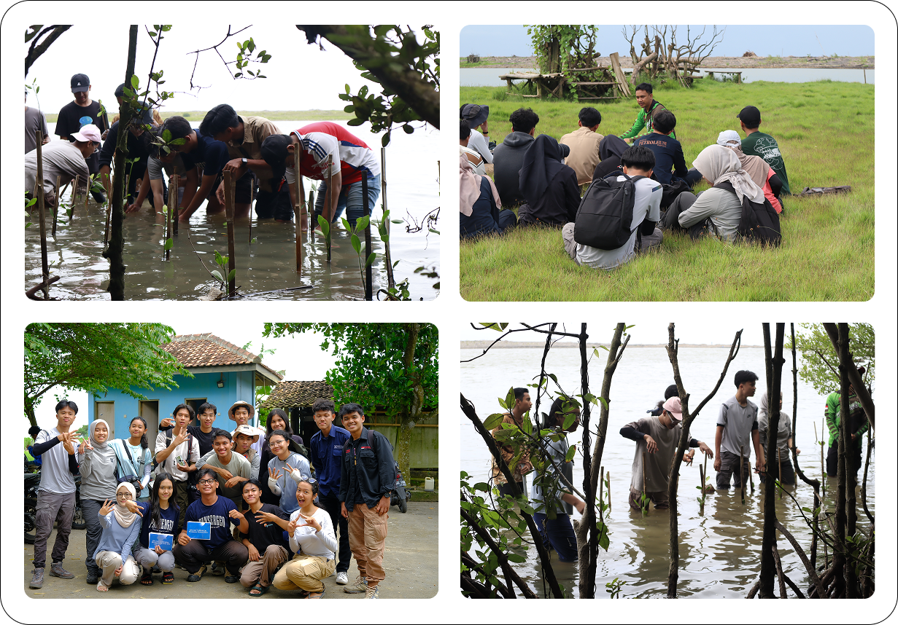

MANGROVE PLANTING

Mangrove planting was chosen as one of the Pre-Event activities because mangroves play a vital role in preserving the environment, especially in coastal areas. Mangroves not only function as effective natural protectors against coastal erosion but also serve as a vital habitat for various marine life. The mangrove ecosystem provides shelter and food sources for fish, birds, and other species, which in turn supports biodiversity. Furthermore, mangroves have an extraordinary ability to absorb carbon dioxide, thus contributing to the reduction of greenhouse gases and climate change.
This mangrove planting activity is expected to provide significant benefits for environmental sustainability, especially for mangrove ecosystems in coastal areas. By involving various parties, both from the government, non-governmental organizations, and local communities, this activity will not only raise awareness of the importance of environmental protection but also build a sense of collective responsibility towards nature. Through this collaboration, it is hoped that mangrove planting activities can serve as an example and inspiration for the community to continue preserving the environment. In addition, this program can also open up educational opportunities regarding the importance of coastal ecosystems and encourage active community participation in nature conservation efforts. Thus, mangrove planting is not just a physical activity, but also a strategic step to create awareness and real action in maintaining the sustainability of our environment.
DOKUMENTATION
